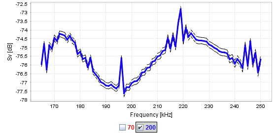

This view shows the Sv-frequency spectra for selected regions.
Description
The average Sv-frequency spectra are computed from the depth ranges in the active regions.
The Sv spectra for all depth ranges are averaged, weighted by number of samples, to produce the average Sv(f).
Large depth ranges are subdivided into smaller depth ranges of approximately two times the pulse length.
Depth ranges too small to produce meaningful Sv spectra are ignored.
The dashed black lines represent the standard error.

Screenshot of the BB Sv(f) view.
FFT calculations
The following figure illustrates how the FFT windows are placed within the depth range of a region for one ping:
The depth range of a region for one ping. The dots represent the centers of the FFT windows.
Depending on the settings, the FFT windows might extend beyond the region boundary.
Settings
FFT settings
Frequency windowing:
The percentage of the frequency band(s) of the spectra to be trimmed at the lower and upper end of the band(s).
The view shows the central (100 - 2 × Frequency windowing) % of each frequency band.
Frequency resolution:
The distance in kHz between the individual frequencies displayed in the plot. The spectrum is computed at full
resolution (determined by the extent of the depth range containing the time signal) and resampled.
Depth resolution:
Vertical distance between the centers of the FFT windows.
Depth margin:
The minimal vertical distance from the region boundary to the center of the FFT window.
FFT window size:
Size of the FFT window in units of pulse length.
Display settings
Plot std. err.:
Whether the dashed black lines representing standard error should be plotted.
Plot narrowband:
Whether frequencies with narrowband data should be plotted.
X-axis:
Mapping of frequencies along x-axis.
Use dB:
Use logarithmic Sv values in dB.
Use TVG:
Plot Sv (with TVG) or Noise (Sv without TVG).
Auto-adjust axes:
Automatically adjust the x-axis and y-axis when the plot is updated.